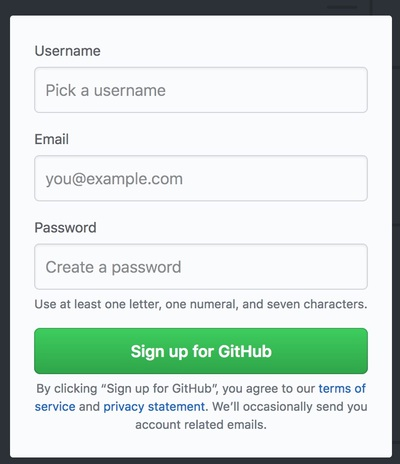

著者: フィッシュ
公開日: 2018年4月14日
ちょっとした文書を公開するときに、GitHub は無料かつ簡単に使えて、更新履歴もすべて保存されるため、とても便利です。ところが、GitHub の解説ページは、チームによるプログラムの共同開発を前提としていて、様々なコマンドが解説されているので、慣れていない人にはとっつきにくく感じるものが多いです。このページでは、
GitHub のページ で、ユーザー名 (Username)、メールアドレス、パスワードを決めて入力します。 Username is already taken と表示されたら、そのユーザー名はすでに使われているので別のユーザー名を考えます。 緑色の Sign up for GitHub ボタンを押します。
次にプランを選びます。公開リポジトリのみ作成する場合は無料で、非公開リポジトリを作成できる有料プランもあります。いつでも有料プランにアップグレードできるので、とりあえず無料プランを選んでおけば良いでしょう。
Unlimited public repositories for free. (公開リポジトリのみ無制限で作成できる無料プラン)を選んで、緑色の Continue ボタンを押します。 アンケートに答えて緑色の Submit ボタンを押すか、skip this step でアンケートをスキップします。 しばらくすると GitHub から
[GitHub] Please verify your email address.というようなタイトルのメールが届くので、メール中のリンクをクリックすることでメールアドレスが確認されて、GitHub のアカウントができます。
GitHub にログインして、右上の + をクリックして New repository をクリックします。
リポジトリの作成画面が出るので、次の図のように入力します。

これで、リポジトリができました。リポジトリの管理画面には
https://github.com/<ユーザー名>/<ユーザー名>.github.ioからアクセスできます。たとえば https://github.com/kyodaisuu/kyodaisuu.github.io です。公開されたホームページ (GitHub Pages) のアドレスは
https://<ユーザー名>.github.ioです。たとえば https://kyodaisuu.github.io となります。
リポジトリの管理画面から、Upload Files をクリックします。
Drag files here to add them to your repositoryと書かれている大きなエリアに、ファイルをエクスプローラやファインダからドラッグ＆ドロップします。まとめて複数のファイルを追加することもできます。
choose your filesから、ファイルを選ぶこともできます。 Commit changes と書かれているところに、コメントを書きます。何も入れなくても自動的にコメントが入りますが、あとで編集履歴が表示されるので、簡単なコメントを入れておくと良いと思います。 Commit changes ボタンを押すことで、ファイルをアップロードできます。このとき、すでにファイルが存在する場合はファイルが更新されます。 ファイルを更新してから、GitHub Pages に反映されるまでには多少時間がかかります。
ディレクトリを作成する手順を記します。
GitHub では「空のディレクトリ」は作成できないので、ディレクトリを作成するときには、このように必ずファイルをいっしょに作成します。一度ディレクトリを作成すれば、リポジトリ管理画面からそのディレクトリに入って、手順3の方法でそのディレクトリにファイルをアップロードできます。
GitHub Help が公式のヘルプです。この中で、このページに記したことと関連するページをまとめます。